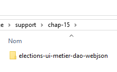
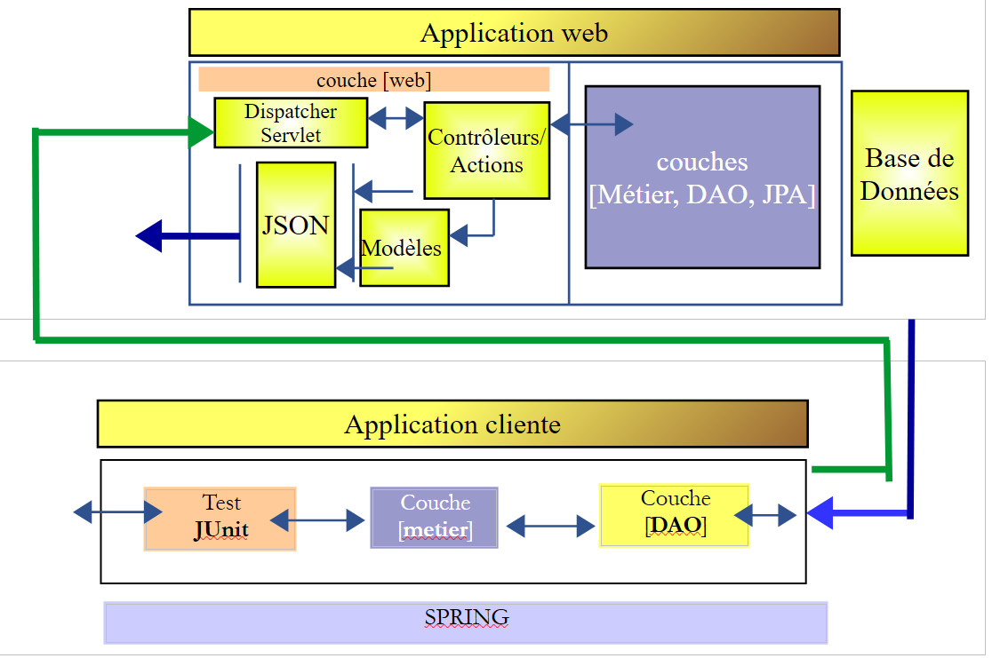
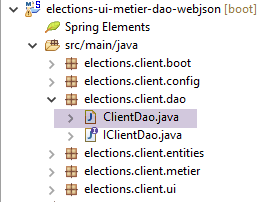
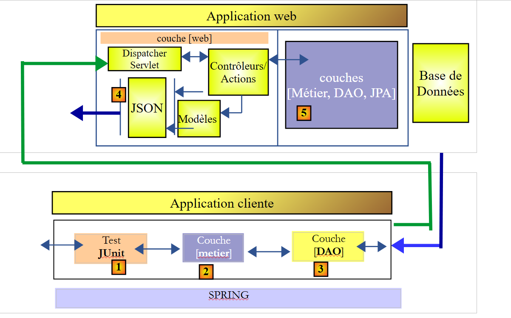
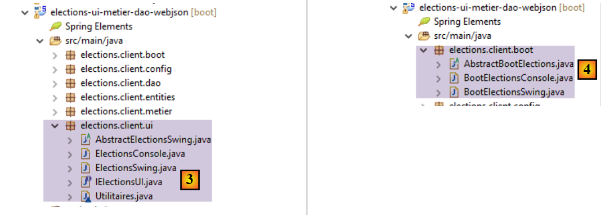
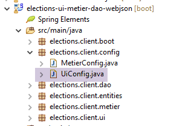

15. [TD] : création d'un client pour le service web
Mots clés : architecture multicouche, Spring, injection de dépendances, service web / jSON, client / serveur
15.1. Support
 |
Les projets de ce chapitre seront trouvés dans le dossier [support / chap-15].
15.2. L'architecture client / serveur
Nous voulons créer l'architecture client / serveur suivante :
 |
La couche [ui] sera celle déjà développée aux paragraphes 9 et 10. Cela sera possible parce que la couche [métier] ci-dessus implémentera la même interface [IElectionsMetier] que la couche [métier] du paragraphe 8 :
package elections.client.metier;
import elections.client.entities.ListeElectorale;
public interface IElectionsMetier {
// obtenir les listes en compétition
public ListeElectorale[] getListesElectorales();
// le nombre de sièges à pourvoir
public int getNbSiegesAPourvoir();
// le seuil électoral
public double getSeuilElectoral();
// l'enregistrement des résultats
public void recordResultats(ListeElectorale[] listesElectorales);
// le calcul des sièges
public ListeElectorale[] calculerSieges(ListeElectorale[] listesElectorales);
}
Dans le paragraphe 7, la couche [DAO] échangeait des données avec un SGBD. Ici la couche [DAO] échange des données avec un serveur web / jSON.
Dans un premier temps, nous nous intéresserons à l'architecture suivante :
 |
15.3. Le projet Eclipse
Le projet Eclipse est le suivant :
 |  |  |
Cette structure reprend celle du projet exemple du paragraphe 13.6.1. Nous allons suivre la même démarche.
15.4. Configuration Maven
C'est celle décrite au paragraphe 13.6.2.
15.5. Implémentation de la couche [DAO]
 |
|
- le package [elections.client.config] contient la configation Spring de la couche [DAO] ;
- le package [elections .client.dao] contient l'implémentation de la couche [DAO] ;
- le package [elections .client.entities] contient les objets échangés avec le service web / jSON ;
- le package [elections .client.metier] contient la couche [métier]
- le package [elections .client.ui] contient la couche [UI]
15.5.1. Configuration de la couche [métier]
 |
La classe [MetierConfig] fait la configuration Spring de la couche [métier]. Son code est le suivant :
package elections.client.config;
import org.springframework.beans.factory.config.ConfigurableBeanFactory;
import org.springframework.context.annotation.Bean;
import org.springframework.context.annotation.ComponentScan;
import org.springframework.context.annotation.Scope;
import org.springframework.http.client.HttpComponentsClientHttpRequestFactory;
import org.springframework.web.client.RestTemplate;
import com.fasterxml.jackson.databind.ObjectMapper;
@ComponentScan({ "elections.client.dao","elections.client.metier" })
public class MetierConfig {
// constantes
static private final int TIMEOUT = 1000;
static private final String URL_WEBJSON = "http://localhost:8080";
@Bean
public RestTemplate restTemplate(int timeout) {
// création du composant RestTemplate
HttpComponentsClientHttpRequestFactory factory = new HttpComponentsClientHttpRequestFactory();
RestTemplate restTemplate = new RestTemplate(factory);
// timeout des échanges
factory.setConnectTimeout(timeout);
factory.setReadTimeout(timeout);
// résultat
return restTemplate;
}
@Bean
public int timeout() {
return TIMEOUT;
}
@Bean
public String urlWebJson() {
return URL_WEBJSON;
}
// mappeur jSON
@Bean
@Scope(value = ConfigurableBeanFactory.SCOPE_PROTOTYPE)
public ObjectMapper jsonMapper() {
return new ObjectMapper();
}
}
Ce code a été expliqué au paragraphe 13.6.3.1. Il est plus simple car il n'y a pas ici de filtres jSON à gérer.
15.5.2. Les entités
 |
Les entités manipulées par les couches [DAO] et [métier] sont celles qu'elles échangent avec le service web / jSON. Ce sont les objets de type [ElectionsConfig] et [ListeElectorale]. Côté serveur, ces entités avaient des annotations de persistence JPA. Ici, ces annotations ont été enlevées. Nous redonnons le code des entités pour rappel :
[AbstractEntity]
package spring.webjson.client.entities;
public abstract class AbstractEntity {
// propriétés
protected Long id;
protected Long version;
// constructeurs
public AbstractEntity() {
}
public AbstractEntity(Long id, Long version) {
this.id = id;
this.version = version;
}
// redéfinition [equals] et [hashcode]
@Override
public int hashCode() {
return (id != null ? id.hashCode() : 0);
}
@Override
public boolean equals(Object entity) {
if (!(entity instanceof AbstractEntity)) {
return false;
}
String class1 = this.getClass().getName();
String class2 = entity.getClass().getName();
if (!class2.equals(class1)) {
return false;
}
AbstractEntity other = (AbstractEntity) entity;
return id != null && this.id == other.id.longValue();
}
// getters et setters
...
}
[ElectionsConfig]
package elections.webjson.client.entities;
public class ElectionsConfig extends AbstractEntity {
// champs
private int nbSiegesAPourvoir;
private double seuilElectoral;
// constructeurs
public ElectionsConfig() {
}
public ElectionsConfig(int nbSiegesAPourvoir, double seuilElectoral) {
this.nbSiegesAPourvoir = nbSiegesAPourvoir;
this.seuilElectoral = seuilElectoral;
}
// getters et setters
...
}
[ListeElectorale]
package elections.webjson.client.entities;
public class ListeElectorale extends AbstractEntity {
// champs
private String nom;
private int voix;
private int sieges;
private boolean elimine;
// constructeurs
public ListeElectorale() {
}
public ListeElectorale(String nom, int voix, int sieges, boolean elimine) {
setNom(nom);
setVoix(voix);
setSieges(sieges);
setElimine(elimine);
}
// getters et setters
...
}
15.5.3. L'interface de la couche [DAO]
 |
La couche [DAO] présente l'interface [IClientDao] suivante :
package elections.client.dao;
public interface IClientDao {
// requête générique
String getResponse(String url, String jsonPost);
}
L'interface n'a qu'une unique méthode [getResponse] :
- le 1er paramètre est l'URL du serveur à interroger ;
- le second paramètre est la valeur jSON de la valeur à poster, null s'il n'y a rien à poster ;
- le résultat est la chaîne jSON d'un objet [Response<T>] où la classe [Response] a été décrite au paragraphe 14.7;
15.5.4. Implémentation des échanges avec le service web / jSON
 |
La classe [ClientDao] implémente l'interface [IClientDao] de la façon suivante :
package elections.client.dao;
import java.net.URI;
import java.net.URISyntaxException;
import org.springframework.beans.factory.annotation.Autowired;
import org.springframework.core.ParameterizedTypeReference;
import org.springframework.http.MediaType;
import org.springframework.http.RequestEntity;
import org.springframework.stereotype.Component;
import org.springframework.web.client.RestTemplate;
import elections.client.entities.ElectionsException;
@Component
public class ClientDao implements IClientDao {
// data
@Autowired
protected RestTemplate restTemplate;
@Autowired
protected String urlServiceWebJson;
// requête générique
@Override
public String getResponse(String url, String jsonPost) {
try {
// url : URL à contacter
// jsonPost : la valeur jSON à poster
// exécution requête
RequestEntity<?> request;
if (jsonPost != null) {
// requête POST
request = RequestEntity.post(new URI(String.format("%s%s", urlServiceWebJson, url)))
.header("Content-Type", "application/json").accept(MediaType.APPLICATION_JSON).body(jsonPost);
} else {
// requête GET
request = RequestEntity.get(new URI(String.format("%s%s", urlServiceWebJson, url)))
.accept(MediaType.APPLICATION_JSON).build();
}
// on exécute la requête
return restTemplate.exchange(request, new ParameterizedTypeReference<String>() {
}).getBody();
} catch (URISyntaxException e1) {
throw new ElectionsException(200, e1);
} catch (RuntimeException e2) {
throw new ElectionsException(201, e2);
}
}
}
Ce code a été décrit au paragraphe 13.6.3.6.
15.6. Implémentation de la couche [métier]
 |
Comme il a été dit, la couche [métier] présente la même interface [IElectionsMetier] que dans le paragraphe 8.4 :
package elections.client.metier;
import elections.client.entities.ListeElectorale;
public interface IElectionsMetier {
// obtenir les listes en compétition
public ListeElectorale[] getListesElectorales();
// le nombre de sièges à pourvoir
public int getNbSiegesAPourvoir();
// le seuil électoral
public double getSeuilElectoral();
// l'enregistrement des résultats
public void recordResultats(ListeElectorale[] listesElectorales);
// le calcul des sièges
public ListeElectorale[] calculerSieges(ListeElectorale[] listesElectorales);
}
Cette interface est implémentée par la classe [ElectionsMetier] suivante :
package elections.client.metier;
import java.util.ArrayList;
import java.util.List;
import javax.annotation.PostConstruct;
import org.springframework.beans.factory.annotation.Autowired;
import org.springframework.context.ApplicationContext;
import org.springframework.stereotype.Component;
import com.fasterxml.jackson.core.type.TypeReference;
import com.fasterxml.jackson.databind.ObjectMapper;
import elections.client.dao.IClientDao;
import elections.client.entities.ElectionsConfig;
import elections.client.entities.ElectionsException;
import elections.client.entities.ListeElectorale;
@Component
public class ElectionsMetier implements IElectionsMetier {
@Autowired
private IClientDao dao;
@Autowired
private ApplicationContext context;
// configuration de l'élection
private ElectionsConfig electionsConfig;
@PostConstruct
public void init() {
// mappeurs jSON
ObjectMapper mapperResponse = context.getBean(ObjectMapper.class);
try {
// requête
Response<ElectionsConfig> response = mapperResponse.readValue(dao.getResponse("/getElectionsConfig", null),
new TypeReference<Response<ElectionsConfig>>() {
});
// erreur ?
if (response.getStatus() != 0) {
// on lance 1 exception
throw new ElectionsException(response.getStatus(), response.getMessages());
} else {
electionsConfig = response.getBody();
}
} catch (ElectionsException e1) {
throw e1;
} catch (Exception e2) {
throw new ElectionsException(100, getMessagesForException(e2));
}
}
@Override
public ListeElectorale[] getListesElectorales() {
...
}
@Override
public int getNbSiegesAPourvoir() {
return electionsConfig.getNbSiegesAPourvoir();
}
@Override
public double getSeuilElectoral() {
return electionsConfig.getSeuilElectoral();
}
@Override
public void recordResultats(ListeElectorale[] listesElectorales) {
...
}
@Override
public ListeElectorale[] calculerSieges(ListeElectorale[] listesElectorales) {
...
}
// liste des messages d'erreur d'une exception
private List<String> getMessagesForException(Exception exception) {
// on récupère la liste des messages d'erreur de l'exception
Throwable cause = exception;
List<String> erreurs = new ArrayList<String>();
while (cause != null) {
// on récupère le message seulement s'il est !=null et non blanc
String message = cause.getMessage();
if (message != null) {
message = message.trim();
if (message.length() != 0) {
erreurs.add(message);
}
}
// cause suivante
cause = cause.getCause();
}
return erreurs;
}
}
Le type [Response] utilisé ligne 37 est la réponse du serveur web / jSON décrite au paragraphe 14.7 ;
Travail à faire : en suivant le paragraphe 13.6.3.7, complétez la classe [ElectionsMetier] ;
15.7. Le test Junit
Revenons à l'architecture client / serveur en cours de construction :
 |
La couche [JUnit] [1] communique avec la couche [Métier] du serveur [5] au travers des couches [2-4]. En faisant en sorte que les couches [Métier] [2] et [5] aient la même interface, on rend les couches [2-4] transparentes. La couche [1] a l'impression de communiquer directement avec la couche [5]. Le point intéressant est qu'en [1] on va pouvoir utiliser le test JUnit qui avait été utilisé pour tester la couche [Métier] [5].
|
Travail à faire : passez le test JUnit du projet pour vérifier votre implémentation et du serveur et de son client.
15.8. Implémentation de la couche [UI]
Revenons à l'architecture que nous voulons construire :
 |
Maintenant que la couche [métier] [2] a été construite et testée, nous pouvons construire la couche [ui] [1].
 |
Comme l'interface [IElectionsMetier] de la couche [métier] est identique à celle du projet décrit au paragraphe8, nous pouvons en [3], copier le projet de la couches [ui] du paragraphe 10. Ce projet était un projet Netbeans. Il suffit de faire un copier / coller des classes Java concernées de Netbeans vers Eclipse. Ceci fait, il y a des ajustements de packages et d'imports à faire.
On fera de même pour les classes exécutables du package [elections.client.boot] [4].
La classe [AbstractBootElections] est la suivante :
package elections.client.boot;
import org.springframework.context.annotation.AnnotationConfigApplicationContext;
import elections.client.config.UiConfig;
import elections.client.entities.ElectionsException;
import elections.client.ui.IElectionsUI;
public abstract class AbstractBootElections {
// récupération du contexte Spring
protected AnnotationConfigApplicationContext ctx;
public void run() {
// instanciation couche [ui]
IElectionsUI electionsUI = null;
try {
// récupération du contexte Spring
ctx = new AnnotationConfigApplicationContext(UiConfig.class);
// récupération de la couche [ui]
electionsUI = getUI();
...
- ligne 19 : le contexte Spring défini par la classe de configuration [UiConfig] est instancié. Cette classe est la suivante :
 |
La classe [UiConfig] est la suivante :
package elections.client.config;
import org.springframework.context.annotation.ComponentScan;
import org.springframework.context.annotation.Import;
@Import(MetierConfig.class)
@ComponentScan(basePackages = { "elections.client.ui" })
public class UiConfig {
}
- ligne 6 : on importe les beans de la couche [métier] ;
- ligne 7 : on indique qu'il y des beans Spring dans le package [elections.client.ui] ;
Travail à faire : vérifiez que les versions console et swing de la couche [ui] fonctionnent.